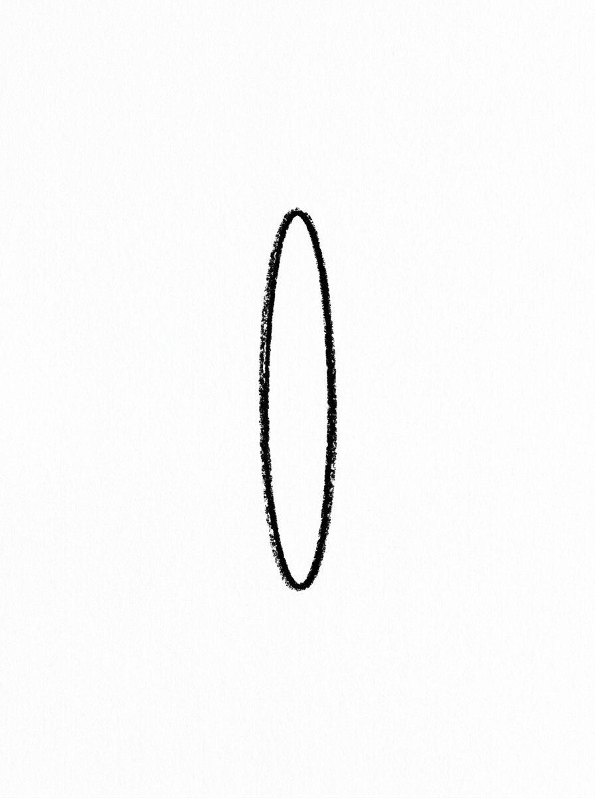
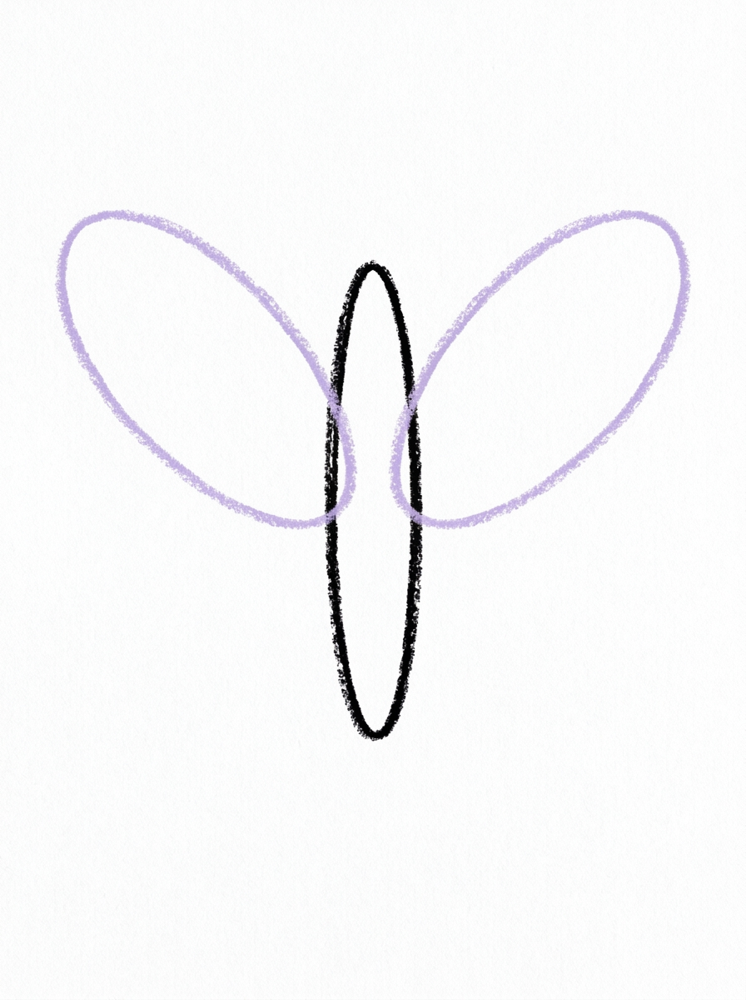
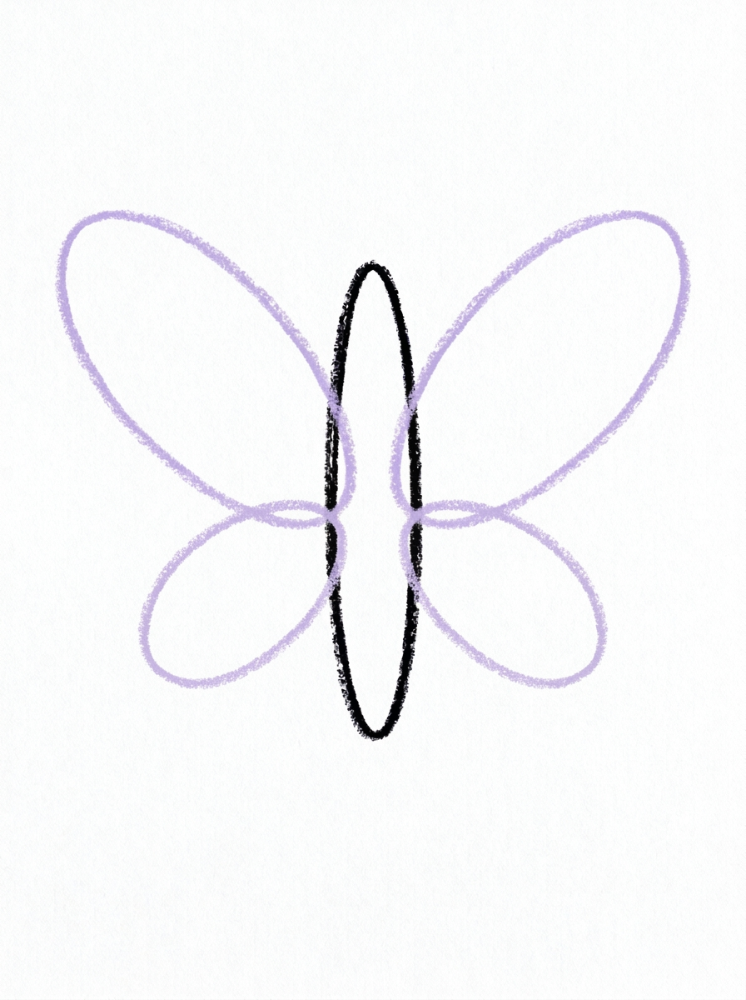
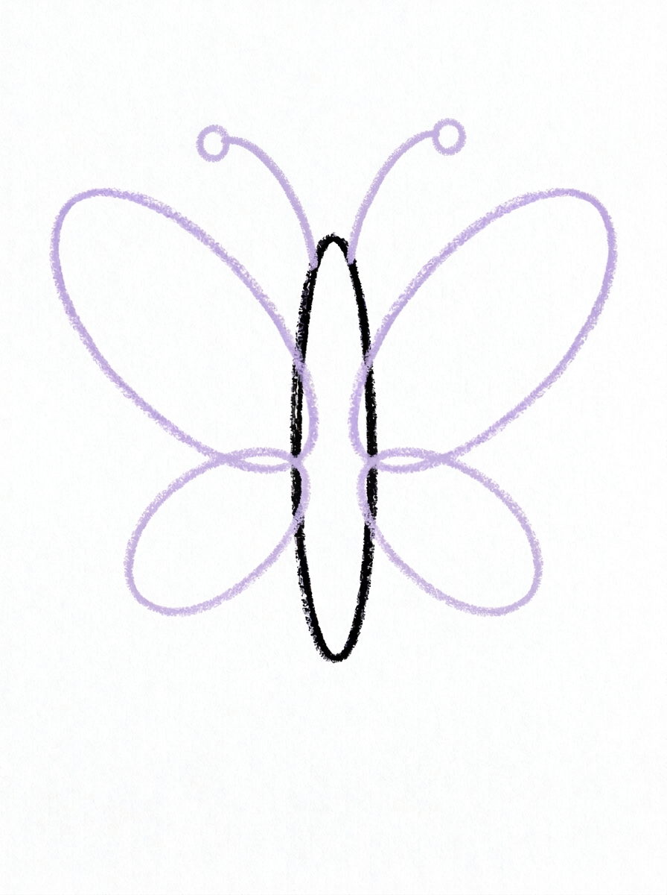
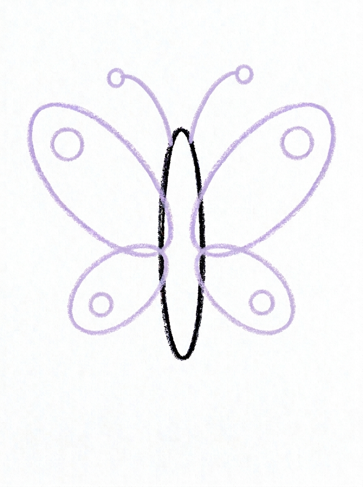
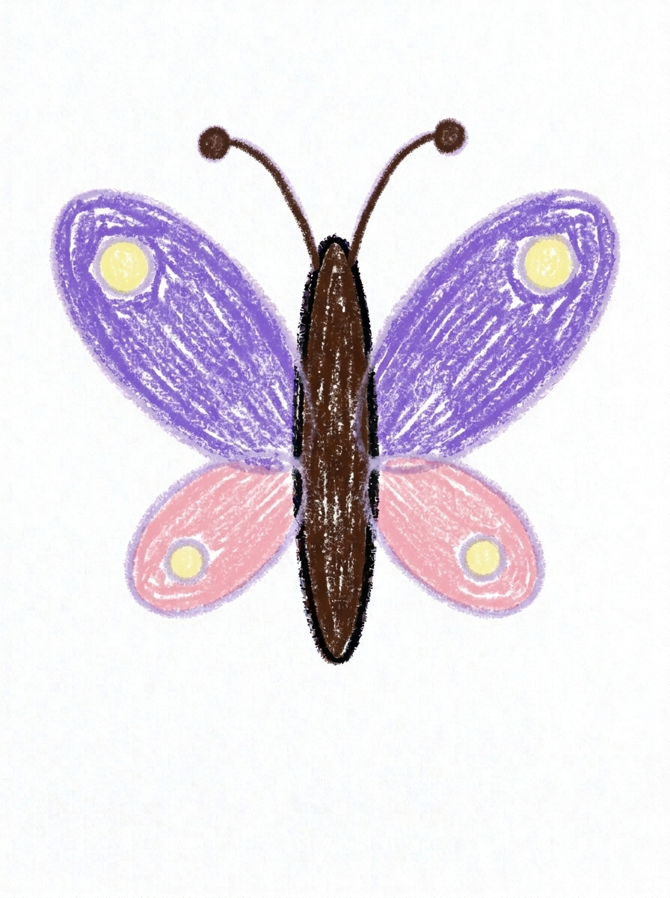

Butterfly Drawing for Kids How to Draw A Butterfly in 6 Easy Steps
Quick Answer
Draw a butterfly in six easy steps: a slim oval body, two big top wings, two smaller bottom wings, two antennae with circle tips, four wing spots, then color. Top wings violet purple, bottom wings pink. Made for ages 3 and up, free, with no signup needed.
At a Glance
- Subject: How to draw a butterfly
- Ages: 3+
- Steps: 6 steps
- Time: ~15 min
- Difficulty: Easy
- Supplies: Paper, crayons
A butterfly is really just a skinny oval wearing four big oval wings — and this tutorial keeps the body slim on purpose, so the wings get to be the stars. Add curvy antennae and one spot in every wing, and it looks ready to flutter off the page.
✏️ Draw Your Butterfly in 6 Easy Steps
One step per box — this step by step butterfly drawing shows each new part in a different color so kids can see exactly what changed.
Step 1: The Body

Draw one slim oval standing straight up in the middle of the page — like a finger. That is the butterfly's body. Keep it small: the wings will be much bigger!
Step 2: The Top Wings

Draw one big oval wing on each side of the top of the body, both the same size.
Step 3: The Bottom Wings

Draw one smaller oval wing on each side of the bottom of the body.
Step 4: The Antennae

Draw two curvy lines coming out of the top of the body, with a little circle at the end of each one.
Step 5: The Wing Spots

Draw one circle spot inside each wing — four spots in all.
Step 6: Color It In

Color the top wings violet purple and the bottom wings soft pink. Make the spots pale yellow, and the body and antennae dark brown.
📊 Butterfly Drawing by Age
Every age can join in — just adjust the job.
| Age | What they can do | Tip |
|---|---|---|
| 3-4 | Draw the slim body and color the big wings — violet purple on top, soft pink on the bottom. | Draw the body small and in the middle of the page; the wings need lots of room on both sides, and that one setup choice matters most. |
| 4-5 | Add both top wings and both bottom wings, working left then right so the pairs match. | After each wing, ask 'where does its twin go?' — matching pairs is the whole game with butterflies. |
| 6+ | Finish all six steps, including the antennae with their circle tips and one spot inside each wing. | Older kids can invent their own wing patterns — extra spots, stripes, or dots — as long as both sides match. |
🖨️ Download Your Free Butterfly Drawing Printable
The printable lays out all 6 steps one per box, big enough for little hands — kids draw right alongside each step.
⬇️ Open Free Printable 🖨️ Print🎁 Free printable for ages 3+
🦋 Butterfly Garden Page
Give your butterfly somewhere to go: draw a garden under it with tall flowers, grass, and a sun, and show the butterfly visiting its favorite flower. Name your butterfly and write its name under the drawing (or dictate it for a grown-up to write). For an extra challenge, draw a second, smaller butterfly with the same steps and different colors — every garden needs a friend.
What You'll Need to Draw A Butterfly
All you need is a pencil, an eraser, and crayons or markers. For the colors in the tutorial, have violet purple ready for the two top wings, soft pink for the two bottom wings, pale yellow for the four spots, and dark brown for the body and antennae. Regular printer paper or a sketchbook both work.
What They're Learning
This tutorial practices ovals in two sizes (big top wings, smaller bottom wings, one slim body), matching pairs and early symmetry — every part on the left has a twin on the right — plus counting to four (four wings, four spots) and two (two antennae). The curvy antennae lines and circle tips add gentle fine-motor control work.
Make It Yours
Try a monarch-style butterfly in orange with black edges, a rainbow butterfly with different colors on all four wings, a baby butterfly drawn smaller with extra-big wings, or a patterned butterfly with stripes and extra dots — just keep both sides matching. Two butterflies over a row of flowers makes a lovely spring card.
🛒 Our Favorite Drawing Supplies
These are the supplies we reach for in our own home — washable (because kids), quality paper, and enough colors to avoid fights.
As an Amazon Associate, MomYouNeedThis earns from qualifying purchases — at no extra cost to you.
💡 Butterfly Drawing Tips for Parents
Step 1 decides the whole drawing: if the body goes down fat, the wings end up small and the butterfly reads as a beetle. Draw it slim — about a finger's width — and right in the middle of the page so both wing pairs have room. If your child draws it big anyway, just roll with it and make the wings even bigger.
Matching wings in steps 2 and 3 is the other make-or-break moment. Have your child draw the left wing, stop, and find where its twin starts before drawing it. The antennae in step 4 curve away from each other like a letter V with wiggles; if they cross or lean the same way, a quick erase and redo is worth it. Spots are forgiving — one per wing, anywhere inside.
🦋 Butterflies in the Real World
A butterfly starts life as a tiny caterpillar, eats and grows, then wraps itself in a chrysalis and comes out completely rebuilt — wings, long legs, and all. That change is called metamorphosis, and it is one of the most dramatic makeovers in nature. The butterfly your child draws is the final chapter of that story.
Butterflies taste with their feet, sip flower nectar through a straw-like tongue, and wear wings covered in tiny colored scales. Some, like the monarch, fly thousands of kilometers to spend the winter somewhere warm. Ask your child where their butterfly is flying to — the garden in the drawing is only the first stop.
✋ Warm-Up: Matching Wing Curves
Butterflies are a mirror game, so warm up by mirroring. Draw one big wing curve on scrap paper, then draw its partner facing it. Do it three or four times, fast — matching curves get easier with every pair, and scrap paper makes the wobbles free. Finish with a row of dots and circles to scatter as wing spots.
In the real drawing, if one wing comes out bigger than the other, do not erase — grow the smaller wing to match instead. Real butterflies are not perfectly even either, and a slightly lopsided butterfly still reads as a butterfly the moment the spots go on.
📖 Give Your Butterfly a Story
Butterflies travel, so their stories write themselves. Where did this butterfly wake up this morning, and which flower is it visiting first? Have your child dictate a sentence or two for under the drawing, and let them sign it like an author — this page is a book of one, for now.
The flower tutorial is the obvious page two: every butterfly story needs the flower it was flying to. Drawing the destination next turns two separate practices into one little story spread. Complete the garden scene with how to draw a bee buzzing by and how to draw a flower to land on.
❓ Butterfly Drawing FAQs
What is the easiest way to draw a butterfly?
Start with one slim oval body standing straight up, then add two big oval wings at the top, two smaller oval wings at the bottom, two antennae with circle tips, and one spot inside each wing.
What age is this butterfly drawing for?
It's made for ages 3 and up. The shapes are all preschool-friendly — ovals, curvy lines, and circles — and younger kids can do the body and coloring while older kids add the antennae and spots themselves.
What supplies do we need?
A pencil, an eraser, paper, and crayons or markers. For colors you'll want violet purple for the top wings, soft pink for the bottom wings, pale yellow for the spots, and dark brown for the body and antennae.
Is the printable really free?
Yes — every printable on MomYouNeedThis is 100% free, including this butterfly drawing tutorial. There is no signup, no email, and no catch — just download, print, and draw.
How do I print it?
Open the PDF and choose Print, then set the scale to 100% (sometimes called Actual Size) so the steps print at full size. The tutorial is designed for regular US Letter paper, and plain printer paper works perfectly.
Why is the butterfly's body so small?
Because on a real butterfly the wings do all the flying and showing off — the body is just the slim middle bit that holds them together. Keeping it finger-thin is what makes the finished drawing look like a butterfly instead of a bug.
How do I make both wings the same?
Draw the wings in matching pairs: draw one, then immediately draw its twin on the other side of the body at the same height and the same size. Little differences are fine — real butterflies wobble too.
Can my butterfly be a different color?
Absolutely — try monarch orange and black, a rainbow butterfly with a different color on every wing, or matching pinks and purples. Just keep the plan simple: top wings one color, bottom wings another, spots a third.
📚 Keep Exploring
- ✏️ All 76 Drawing Tutorials 76 free step-by-step drawing tutorials for kids.
- 🐾 Animal Coloring Free animal coloring pages for kids.
- ✏️ Drawing Practice Free printable drawing pre-writing worksheet for toddlers.